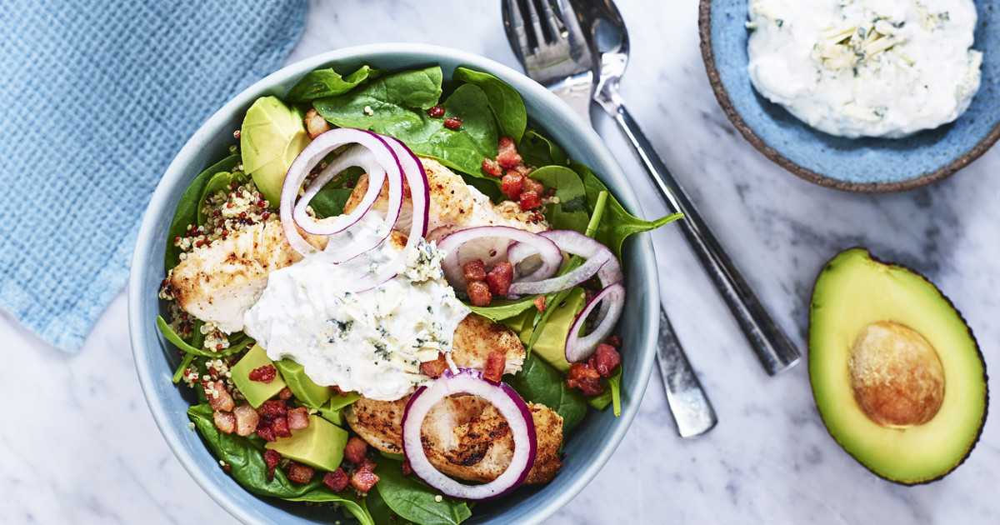

Kyckling & quinoa bowl
Ett exempel på ett detaljerat recept med ingredienser, steg-för-steg och näringsinformation. Byt text/bild senare.
Lägg i kundvagn Tillbaka till recept
Ingredienser
- Kycklingfilé (2 portioner)
- Quinoa
- Broccoli / salladsmix
- Yoghurt- eller tahinisås
- Kryddor (salt, peppar, paprika)
Näringsinformation
Per portion (exempel):
- Kalorier: 520 kcal
- Protein: 42 g
- Kolhydrater: 48 g
- Fett: 16 g
Instruktioner
- Koka quinoa enligt anvisningar.
- Stek kyckling med kryddor tills genomstekt.
- Tillaga broccoli (koka/ånga) och förbered sallad.
- Blanda ihop i en skål och toppa med sås.